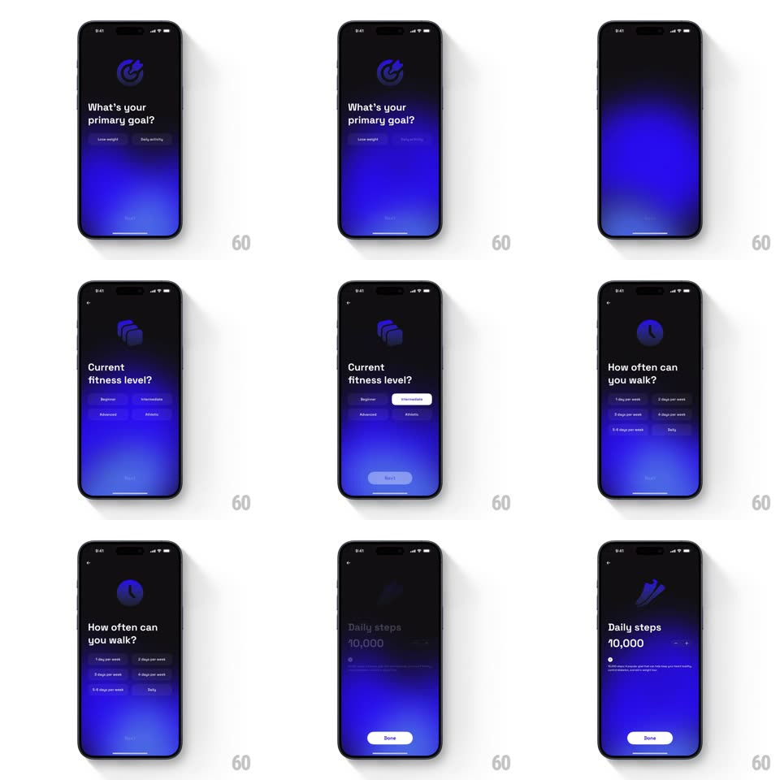

Media
Frame-by-frame

Rebuild this interaction 1:1: Go Club's onboarding - after the "every step counts" splash, a sequence of question screens ("What's your primary goal?", "Current fitness level?", "How often can you walk?", "Daily steps 10,000") where answer chips select with a fill, the question slides between steps, and the Next button arms once an answer is picked.

Rebuild this interaction 1:1: Go Club's onboarding - after the "every step counts" splash, a sequence of question screens ("What's your primary goal?", "Current fitness level?", "How often can you walk?", "Daily steps 10,000") where answer chips select with a fill, the question slides between steps, and the Next button arms once an answer is picked.
## Integration
Integration: stack-agnostic spec - springs given as stiffness/damping, timed motions as duration + curve; map every value to your framework and animation library of choice.
## Scene
Dark navy-blue gradient screens: splash with runner artwork and "every step counts" wordmark (Sign in with Apple / Google pills). Each question screen: back chevron, a small circular icon that morphs per question (footprint, cubes, clock), a bold question, 2-4 answer chips (Lose weight / Daily activity; Beginner...Athletic; days per week), and a bottom Next/Done pill. Final: "Daily steps 10,000" with a minus/plus stepper.
## Motion spec
Pattern: stepped questionnaire, ~350ms per advance.
- Select: tapping a chip fills it (150ms) and pops it (scale 0.95 -> 1.03 -> 1, spring ~400/22); the previous selection deflates (150ms).
- Arm: Next fills from muted to solid white (200ms) once a selection exists.
- Advance: the question and chips slide out left while the next question slides in from the right (350ms, ease-out), the header icon morphing to the new glyph (crossfade + rotate 90deg, 300ms).
- Stepper: tapping +/- bumps the step count (odometer roll, 200ms) with a tick haptic.
## Calibration
- One selection per question - chips behave as a radio group.
- The icon, question, and chips change as one choreographed step, not independent fades.
## Reduced motion
Steps crossfade (250ms); chips switch fill instantly.
## Don't miss
- The blue gradient background deepens slightly with each step.
- The final Done button replaces Next only on the last question.